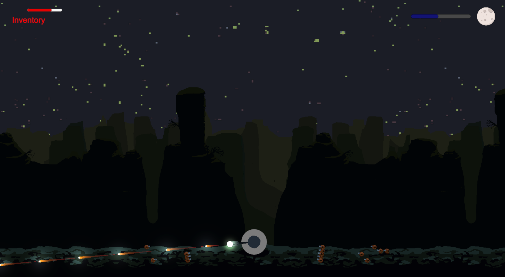

Development Process
The team I worked with on this project are all new to game development, with very little experience developing a game using Unity. We began the development by brainstorming ideas for the game, and deciding together on what we wanted to make. Once we had
outlined our game and the features included, we each chose a role in the team.
My role was Project Manager. I chose to use GitHub Projects as my project management software, as it would be easy to integrate with our GitHub repository for the project. As the project manager I took on the managing of our documents
and scheduling of meetings. With the aid of the team I maintained a GoogleDrive folder with documents outlining the scope of the project, as well as minutes from our meetings.
We used an agile development methodology, with 2 week sprints where we would each focus on tasks that were assigned to us for the sprint. At the end of each sprint we would have a team meeting to share what we accomplished, any issues
or setbacks, as well as discuss the next steps of the project.
Though I was the project manager, I still played an active role in the software development side of the project. The primary system in the game that I was responsible for was the Player Controller system. I developed this using something
called a finite state machine. This is a series of "states" that the player can be in, and handles the logic for what the player is able to do in each states, as well as how the player transitions between states. Some examples
of states are things like "run", "idle", "duck". I also developed the player's jetpack system in conjunction with the finite state machine.
This project was very enjoyable to work on, and taught me a lot. When starting this project my goals were to gain experience working as a team, and to learn how to develop a game in Unity. I can say that I definitely achieved both of those
goals with this project, as well as gaining valuable experience managing a small project.
There were some growing pains with our team throughout the project, as none of us had worked in a team environment where everyone was on equal footing. Everyone on the team was assigned roles, but we voted on large decisions such as features
that would be added to the game. Sometimes it can be hard to come to an agreement when everyone feels passionately about their opinions, but we all remained respectful of each other and were able to have productive discussions and
come to a consensus on all major decisions.
I loved using Unity to develop a game, and this is definitely something I will continue to explore in the future as both a potential career avenue as well as a hobby.